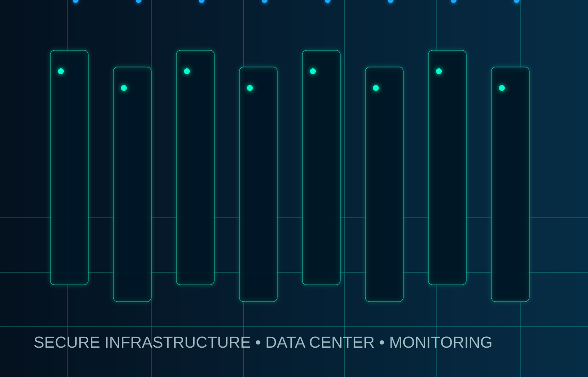

🛡
Cybersecurity
SOC-style monitoring, Wazuh SIEM, log analysis, threat detection, hardening and practical incident response support.
Fast Tech Repair delivers professional IT support, cybersecurity-focused services, enterprise-style server builds, networking, web development and high performance gaming systems.
A modern security-first website for a company focused on cybersecurity, infrastructure, servers, networking and custom high performance computers.
SOC-style monitoring, Wazuh SIEM, log analysis, threat detection, hardening and practical incident response support.
Linux servers, virtualization, storage, backup planning, secure networking and enterprise-style system deployment.
Custom gaming PCs, RTX workstations, airflow, upgrades, clean cable management and performance tuning.

Fast Tech Repair combines repair experience with modern cybersecurity and infrastructure skills to support homes, creators and small businesses.
Get support for cybersecurity, servers, networks, repairs, websites and performance PC builds.